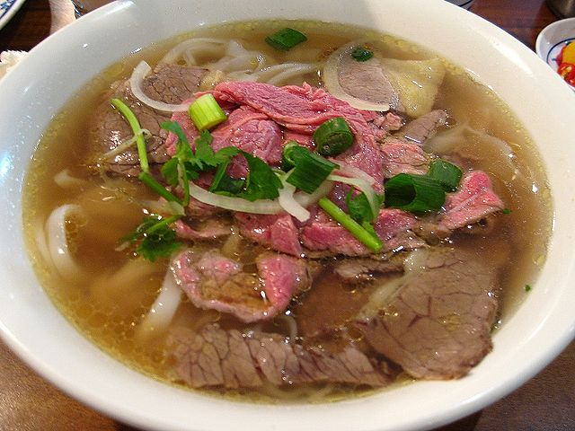

Pho'll of Pho

Pho Soup to soothe the SEA Soul
You've heard of chicken soup to soothe the soul? Well for many in Asia, especially in Vietnam,
Pho is the soup of choice. The broth is light and flavorful, and the cuts of meat can be as varied or simple
as you'd like. There is nothing more comforting than a nice bowl of pho, no matter the weather... and especially
after a night of drinking. The following recipe will serve about three (3) people.
Ingredients
- 4 pounds bone-in beef shank
- 1 onion
- 5 slices fresh ginger root
- 1 pod star anise, whole
- 1 teaspoon of salt
- 2 1/2 tablespoons of fish sauce
- 1 (8 oz) package dried rice noodles
- 1/2 pound cooked beef sirloin, thinly sliced
- 3 green onions, chopped
- 1 1/2 cups fresh bean sprouts
- 6 sprigs cilantro
Cooking Steps
- In a large pot over medium heat, bring beef shank and 3 quarts water to a boil.
Skim off foam. Reduce heat, cover and simmer 4 hours.
- Preheat oven broiler. Place unpeeled whole onion under broiler until soft. Remove and peel.
- Stir onion, ginger, anise, salt and fish sauce into beef mixture.
- Bring a large pot of lightly salted water to a boil. Add rice noodles and cook for 8 to 10 minutes
or until al dente; drain.
- Divide noodles into three serving bowls. Place cooked sirloin on top of pasta in bowls. Sprinkle green onions,
bean sprouts and cilantro envely in bowls. Strain beef broth and divide evenly between
serving bowls, pouring over assembled ingredients. Serve at once.
Return to Recipes